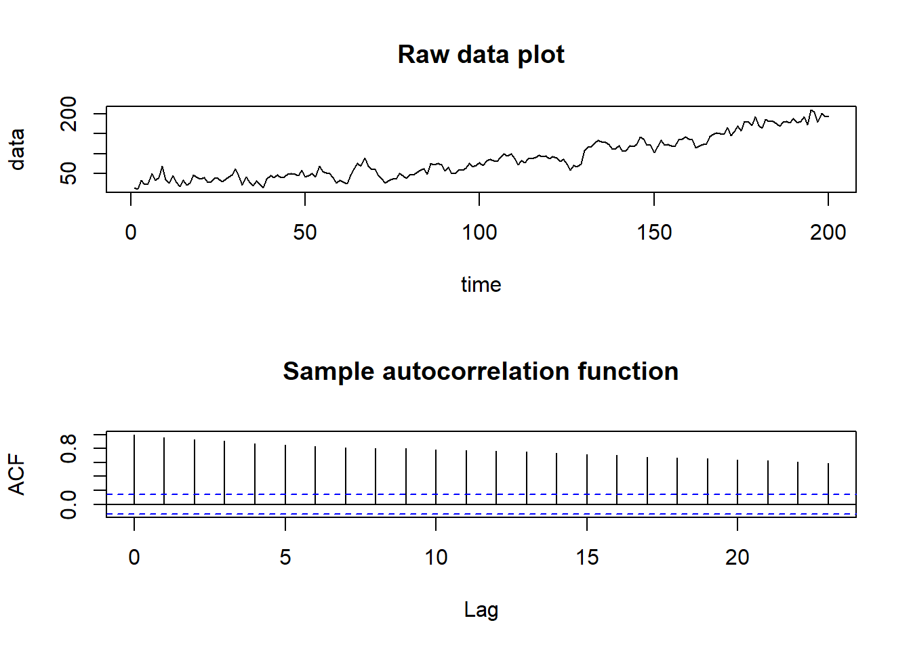

7 Chapter 4: Moving Average processes
7.1 Definition
A Moving Average process of order \(q\), denoted MA(\(q\)), is given by
\[X_{t}=\lambda_{0}Z_{t}+\lambda_{1}Z_{t-1}+\ldots+\lambda_{q}Z_{t-q}\]
where \(\lambda_0=1\)
7.2 Mean and Variance
Mean of any MA(\(q\)) process: \(E[X_t]=0\)
Variance: \[X_{t}=\sigma^{2}_{z}\left[1+\sum_{j=1}^{q}\lambda_{j}^{2}\right]\]
7.3 Autocorrelation functions
Autocovariance function:
\[\gamma_{\tau}=\mathrm{Cov}[X_{t},X_{t+\tau}]=\left\{\begin{array}{cc}\sigma_{z}^{2}\sum_{j=0}^{q-\tau}\lambda_{j}\lambda_{j+\tau}&\mbox{if}~\tau=0,1,\ldots,q\\ 0&\tau>q\\ \end{array}\right.\]
and autocorrelation function:
\[\rho_{\tau}=\mathrm{Corr}[X_{t},X_{t+\tau}]=\left\{\begin{array}{cc}1&\mbox{if}~\tau=0\\ \frac{\sum_{j=0}^{q-\tau}\lambda_{j}\lambda_{j+\tau}}{\sum_{j=0}^{q}\lambda_{j}^{2}}&\mbox{if}~\tau=1,\ldots,q\\ 0&\tau>q\\ \end{array}\right.\]
where \(\lambda_0=1\)
Notes:
The mean and variance of any MA(\(q\)) process are finite and constant, while the autocorrelation function is finite and does not depend on \(t\). Therefore any MA(\(q\)) is weakly stationary.
The autocorrelation function of an MA(\(q\)) process is positive at lags \(1,…,q\) and zero for any lag greater than \(q\). This gives us a method for detecting whether an MA(\(q\)) process is an appropriate model for a given data set.
7.3.1 Examples:
Consider the MA(1) process: \(X_t = Z_t + \lambda Z_{t-1}\). Its variance is given by \[\begin{eqnarray} \mathrm{Var}[X_{t}]&=&\mathrm{Var}[Z_{t}+\lambda Z_{t-1}]\nonumber\\ &=&\sigma^{2}_{z}(1+\lambda^{2}).\nonumber \end{eqnarray}\]
Its lag one autocovariance is given by
\[\begin{eqnarray} \mathrm{Cov}[X_{t},X_{t+1}]&=&\mathrm{Cov}[Z_{t}+\lambda Z_{t-1},~Z_{t+1}+\lambda Z_{t}]\nonumber\\ &=&\mathrm{Cov}[Z_{t},~Z_{t+1}]+\lambda \mathrm{Cov}[Z_{t},~Z_{t}]+\lambda \mathrm{Cov}[Z_{t-1},~Z_{t+1}]+\lambda^{2}\mathrm{Cov}[Z_{t-1},~Z_{t}]\nonumber\\ &=&\lambda \sigma_{z}^{2}\nonumber \end{eqnarray}\]
lag 2 autocovariance is given by
\[\begin{eqnarray} \mathrm{Cov}[X_{t},X_{t+2}]&=&\mathrm{Cov}[Z_{t}+\lambda Z_{t-1},~Z_{t+2}+\lambda Z_{t+1}]\nonumber\\ &=&\mathrm{Cov}[Z_{t},~Z_{t+2}]+\lambda \mathrm{Cov}[Z_{t},~Z_{t+1}]+\lambda \mathrm{Cov}[Z_{t-1},~Z_{t+2}]+\lambda^{2}\mathrm{Cov}[Z_{t-1},~Z_{t+1}]\nonumber\\ &=&0.\nonumber \end{eqnarray}\]
the autocorrelation function is given by
\[\rho_{\tau}=\left\{\begin{array}{cc}1&\mbox{if}~\tau=0\\ \frac{\lambda}{1+\lambda^{2}}&\mbox{if}~\tau=1\\ 0&\tau>1\\ \end{array}\right.\]
7.3.2 Another example
Consider the MA(2) process \(X_t = Z_t +0.9Z_{t-1}+0.5Z_{t-2}\). Its variance is given by
\[\begin{eqnarray} \mathrm{Var}[X_{t}]&=&\mathrm{Var}[Z_{t}+0.9 Z_{t-1} + 0.5Z_{t-2}]\nonumber\\ &=&\sigma^{2}_{z}(1+0.81 + 0.25)\nonumber\\ &=&2.06\sigma^{2}_{z}.\nonumber \end{eqnarray} \]
Its lag one autocovariance is given by
\[\begin{eqnarray} \mathrm{Cov}[X_{t},X_{t+1}]&=&\mathrm{Cov}[Z_{t}+0.9 Z_{t-1}+0.5Z_{t-2},~Z_{t+1}+0.9 Z_{t} +0.5Z_{t-1}]\nonumber\\ &=&0.9 \mathrm{Cov}[Z_{t},~Z_{t}]+0.45 \mathrm{Cov}[Z_{t-1},~Z_{t-1}]\nonumber\\ &=&1.35\sigma_{z}^{2}\nonumber \end{eqnarray} \]
Its lag 2 autocovariance is given by
\[\begin{eqnarray} \mathrm{Cov}[X_{t},X_{t+2}]&=&\mathrm{Cov}[Z_{t}+0.9 Z_{t-1}+ 0.5Z_{t-2},~Z_{t+2}+0.9 Z_{t+1}+ 0.5Z_{t}]\nonumber\\ &=&0.5\mathrm{Cov}[Z_{t},~Z_{t}]\nonumber\\ &=&0.5\sigma^{2}_{z}.\nonumber \end{eqnarray} \] Therefore the autocovariance function is given by
\[\gamma_{\tau}=\left\{\begin{array}{cc}2.06\sigma^{2}_{z}&\mbox{if}~\tau=0\\ 1.35\sigma^{2}_{z}&\mbox{if}~\tau=1\\ 0.5\sigma^{2}_{z}&\mbox{if}~\tau=2\\ 0&\tau>2\\ \end{array}\right. \]
while the autocorrelation function is given by
\[\rho_{\tau}=\left\{\begin{array}{cc}1&\mbox{if}~\tau=0\\ 0.655&\mbox{if}~\tau=1\\ 0.243&\mbox{if}~\tau=2\\ 0&\tau>2\\ \end{array}\right. \]
7.4 Invertibility
Therefore, given a set of sample autocorrelation functions \(\hat{\boldsymbol{\rho}}_p\) calculated from a time series, there is a unique set of parameters $that best fit the data within the class of stationary AR(p) processes. For an MA(q) process the corresponding relationship is given by
\[\rho_{\tau}=\mathrm{Corr}[X_{t},X_{t+\tau}]=\left\{\begin{array}{cc}1&\mbox{if}~\tau=0\\ \frac{\sum_{j=0}^{q-\tau}\lambda_{j}\lambda_{j+\tau}}{\sum_{j=0}^{q}\lambda_{j}^{2}}&\mbox{if}~\tau=1,\ldots,q\\ 0&\tau>q\\ \end{array}\right. \]
which is a set of non-linear equations in \(\boldsymbol{\lambda}=(\lambda_{1},\ldots,\lambda_{q})\). Therefore for a given autocorrelation function \(\boldsymbol{\rho}_{q}\) there may exist more than one set of parameters \(\lambda\) that satisfy the above equation.
7.4.1 Inveritibility Theorem
The MA(q) process
\[\begin{eqnarray} X_{t}&=&Z_{t}+\lambda_{1}Z_{t-1}+\ldots+\lambda_{q}Z_{t-q}\nonumber\\ &=&(1+\lambda_{1}B+\ldots+\lambda_{q}B^{q})Z_{t}\nonumber\nonumber\\ &=&\theta(B)Z_{t}\nonumber \end{eqnarray} \]
is invertible if and only if the roots of the characteristic polynomial \(\theta (B)\) have modulus greater than one and hence lie outside the unit circle.
7.4.1.1 Example of invertibility
\[X_{t}=Z_{t} + 4.25Z_{t-1} + Z_{t-2}\]
Characteristic polynomial is given by \(\theta(B)~=~1 + 4.25B + B^{2}\)
Solving \(1 + 4.25B + B^{2}=0\) gives:
\[\begin{eqnarray} \mbox{roots}&=&\frac{-4.25\pm\sqrt{(4.25)^2-4\times1\times1}}{2\times 1}\nonumber\\ \mbox{roots}&=&\frac{-4.25\pm3.75}{2}\nonumber\\ \mbox{roots}&=&-0.25\mbox{ and }-4\nonumber \end{eqnarray} \]
Therefore as one of the routes has modulus less than one the process is not invertible.
7.5 MA Model Identification
Determine if a MA model is appropriate and which order process should we use using the autocorrelation function ACF:
\[\rho_{\tau}=\mathrm{Corr}[X_{t},X_{t+\tau}]=\left\{\begin{array}{cc}1&\mbox{if}~\tau=0\\ \frac{\sum_{j=0}^{q-\tau}\lambda_{j}\lambda_{j+\tau}}{\sum_{j=0}^{q}\lambda_{j}^{2}}&\mbox{if}~\tau=1,\ldots,q\\ 0&\tau>q\\ \end{array}\right. \]
This function is non-zero for \(\tau \le q\) and zero for \(\tau >q\)
Note The autocorrelation function (ACF) tells us whether an MA(q) process is appropriate while the partial autocorrelation function (PACF) suggests whether an AR(p) process is appropriate. Therefore for a given time series, both should be plotted to show which process would be a good model.
7.5.1 Example
Looking at ACF, Data 1 uses MA(1) process, Data 2 uses MA(2), Data 3 uses MA(3), Data 4 uses MA(12)
7.6 MA parameter estimation
Conditional least squares: Consider the MA(1) model \(X_{t}=\mu+Z_{t}+\lambda Z_{t-1}\), where \(\mathrm{Var}[Z_{t}]=\sigma^{2}_{z}\). The conditional least squares algorithm works as follows:
- Select starting values for \(\mu\) and \(\lambda\),
\[\tilde{\mu}=\frac{1}{n}\sum_{t=1}^{n}x_{t}\hspace{1cm}\mbox{and by solving}\hspace{1cm}\hat{\rho}_{1}=\frac{\tilde{\lambda}}{1+\tilde{\lambda}^{2}} \]
- Calculate the conditional residual sum of squares
\[S(\tilde{\mu},\tilde{\lambda})=\sum_{t=1}^{n}[x_{t}-\tilde{\mu}-\tilde{\lambda}Z_{t-1}]^{2} \]
Where \(Z_0=0\) and \(_Z_t\) is calculated recursively using
\[Z_{t}=x_{t}-\tilde{\mu}-\tilde{\lambda}Z_{t-1} \]
Repeat step 2 for a range of values of \((\mu, \lambda)\) that are close to the initial estimates in step 1. Then determine the estimates \((\hat{\mu},\hat{\lambda})\) as the values that mimimize \(S(\tilde{\mu},\tilde{\lambda})\) over all those values considered
Using the fact that the variance of an MA(1) process is \(\mathrm{Var}[X_{t}]=\sigma^{2}_{z}(1+\lambda^{2})\), we obtain that
\[\hat{\sigma}^{2}_{z}=\frac{\hat{\sigma}^{2}}{(1+\hat{\lambda}^{2})} \]
where \(\hat \sigma^2\) is the overall variance of the process.
7.7 MA Example
# Generate MA(3) data with a quadratic trend
time <- 1:200
n <- 200
sd <- 10
data.ar <- arima.sim(model = list(ma = c(0.6, 0.3, 0.6)), n = n, sd = sd)
data <- data.ar + 30 + 0.05 * time + 0.004*time^2
par(mfrow = c(2, 1))
plot(time, data, type = "l", main = "Raw data plot")
acf(data, main = "Sample autocorrelation function")
From looking at the time plot and correlogram the data appear to have a quadratic trend, which we remove before trying to model the correlation. Fitting \(m_{t}=\beta_{0}+\beta_{1}t+\beta_{2}t^{2}\) gives the follwing residual series:
# Remove the trend
time2 <- time^2
linear.model <- lm(data ~ time+time2)
residual.series <- data - linear.model$fitted.values
par(mfrow = c(3,1))
plot(residual.series, main = "Residual series")
acf(residual.series, main = "ACF of Residual series")
pacf(residual.series, main = "PACF of Residual series")Time plot suggests stationary while ACF suggest an MA(3) process is appropriate. Note that the PACF doesn’t tell us a lot here.
Finally we fit a MA(3) model using function arima() in R
# Fit an MA(3) model to the data
model.ma <- arima(residual.series, order = c(0, 0, 3))
model.ma##
## Call:
## arima(x = residual.series, order = c(0, 0, 3))
##
## Coefficients:
## ma1 ma2 ma3 intercept
## 0.6409 0.4573 0.6248 -0.1172
## s.e. 0.0544 0.0665 0.0561 1.7578
##
## sigma^2 estimated as 84.39: log likelihood = -728.25, aic = 1466.51arima(x = residual.series, order = c(0, 0, 3))##
## Call:
## arima(x = residual.series, order = c(0, 0, 3))
##
## Coefficients:
## ma1 ma2 ma3 intercept
## 0.6409 0.4573 0.6248 -0.1172
## s.e. 0.0544 0.0665 0.0561 1.7578
##
## sigma^2 estimated as 84.39: log likelihood = -728.25, aic = 1466.51par(mfrow = c(3, 1))
plot(model.ma$residuals, main = "MA(3) Residual series")
acf(model.ma$residuals, main = "MA(3) ACF of Residual series")
pacf(model.ma$residuals, main = "MA(3) PACF of Residual series")Residuals look independent (resemble white noise), so the model below is appropriate
\[X_{t}=\beta_{0}+\beta_{1}t+\beta_{2}t^{2}+\lambda_{1}Z_{t-1}+\lambda_{2}Z_{t-2}+\lambda_{3}Z_{t-3}+Z_{t}. \]